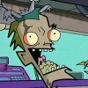
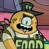
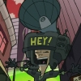

|
FEATURES
Screenshot Galleries
Transcripts
Cancelled
Episodes
Irken
Guide
ENCYCLOPEDIAS
A-Z Bios
Seating Charts
Planet
Guide
Alien
Species
Invaders
The Resisty
OTHER STUFF
Updates
Fan
Fiction/Art
Lizard Boy Shrine
Blotch Test (POS 2000)
Deleted Scenes
Links
THE MONKEY
Info
Games
Cursors
GUESTBOOK
View
Sign
E-mail

| |
|
Invader ZIM biographies
[1-9]
[A]
[B]
[C]
[D]
[E]
[F]
[G]
[H]
[I]
[J]
[K]
[L]
[M]
[N]
[O]
[P]
[Q]
[R]
[S]
[T]
[U]
[V]
[W]
[X]
[Y]
[Z]
[Stock Bios]
[Cancelled Bios] |
|
|
|
|
The Enigma |
|
|
|
Major Appearances:
The Halloween Spectacular of Spooky Doom
Quote: "No... You,
you did good! It was great!"
Affiliation: Nightmare World
See also: Nightmare
creatures, Nightmare Bitters |
|
The Enigma is a harmless
looking nightmare monster with a gaping mouth on his belly and a
steering wheel protruding from his chest. He comforts Nightmare
Bitters when she makes a fool of herself and he is reluctant when
Nightmare Bitters commands them to chase down Dib. |
|
Eric |
|
|
 |
Major Appearances:
The Sad, Sad Tale of Chickenfoot
Quote: "That dirty
chicken has a seeecret!"
Affiliation:
Chicky Licky
See also: Chuy
Rodriguez, Maria |
|
A creepy old man who works
at the Chicky Licky restaurant, he gives Dib information on
Chickenfoot. Maria and he were also the cause of the creation of
Chickenfoot. |
|
Eric the Blob |
|
|
 |
Major Appearances:
The Frycook What Came From All That Space
Quote: "Hey, little
sizzly! You look sadder than me!"
Affiliation:
Shloogorgh's Flavor Monster
See also: Sizz-Lorr |
|
Shloogorgh's number one
customer due to the huge amount of food he buys, Eric is a cyclopean
blob who has a job as an intergalactic repairman. He installed the
security on the Vortian prisons and thus inadvertently gave Zim
information on how to escape his job at Shloogorgh's by telling Zim
that the restaurant used same faulty Vetkin Splodey System. Zim hid
in Eric's food and then burst out of the blob once he was safely out
of the restaurant. |
|
Evacuation Overseer |
|
|
 |
Major Appearances:
Walk for your Lives
Quote: "Evacuate
the city! Um... No hurry, though. Just... you know, whenever."
Affiliation:
City
See also: |
|
A man wearing a megaphone
helmet oversees the evacuation of the city while ZIM's slow moving
explosion expands little by little. |
|
|
|
|